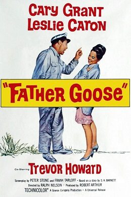

THE STANFORD THEATRE
Now Showing
·
Upcoming
·
Past
·
Search
July 1 - September 3, 2023
Summer 2023: The Best of Cary Grant and Alfred Hitchcock
19 bills
July 1 - 2
Bringing Up Baby (1938)
102 min
She Done Him Wrong (1933)
68 min
July 6 - 7
Blonde Venus (1932)
93 min
I'm No Angel (1933)
87 min
July 8 - 9
Only Angels Have Wings (1939)
121 min
His Girl Friday (1940)
90 min
July 13 - 14
This Is the Night (1932)
80 min
Thirty Day Princess (1934)
74 min
July 15 - 16
Topper (1937)
95 min
The Awful Truth (1937)
87 min
July 20 - 21
Destination Tokyo (1943)
135 min
Gunga Din (1939)
108 min
July 22 - 23
Notorious (1946)
102 min
Suspicion (1941)
99 min
July 27 - 28
Holiday (1938)
92 min
Sylvia Scarlett (1935)
95 min
July 29 - 30
The Philadelphia Story (1940)
108 min
The Talk of the Town (1942)
119 min
August 3 - 4
Penny Serenade (1941)
119 min
None But the Lonely Heart (1944)
113 min
August 5 - 6
Arsenic and Old Lace (1944)
118 min
Monkey Business (1952)
97 min
August 10 - 11
People Will Talk (1951)
110 min
Every Girl Should Be Married (1948)
85 min
August 12 - 13
To Catch a Thief (1955)
106 min
An Affair to Remember (1957)
119 min
August 17 - 18

Father Goose (1964)
114 min
Indiscreet (1958)
100 min
August 19 - 20
North by Northwest (1959)
136 min
Charade (1963)
113 min
August 24 - 25
Shadow of a Doubt (1943)
108 min
Strangers on a Train (1951)
93 min
August 26 - 27
Vertigo (1958)
128 min
Rear Window (1954)
112 min
August 31 - September 1
Dial M for Murder (1954)
101 min
Rope (1948)
80 min
September 2 - 3
The Birds (1963)
119 min
Psycho (1960)
109 min
Archived
•
StanfordTheatre.org Original